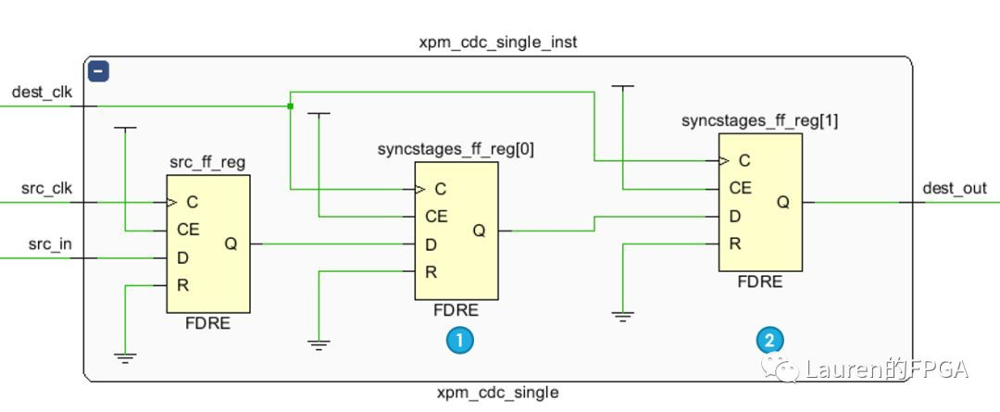

Vivado 软件¶
IP 核¶
PLL
FIFO
RAMROM
仿真¶
DCP 文件不能直接用于仿真，需要转成可仿真的文件
转换的方法(在 tcl console 命令行输入转换命令)
open_checkpoint XXX.dcp
write_vhdl -mode funcsim XXX.vhd
write_verilog -mode funcsim XXX.v
Tcl Shell¶
Verilog hdl 与 VHDL 混用¶
由于在FPGA开发过程中，多人合作时可能遇到有人使用verilog hdl，有人使用VHDL的情况，这就涉及到了verilog hdl与VHDL的相互调用。
Verilog hdl调用VHDL很简单，只需要把VHDL的实体（entity）当成一个verilog模块（module）即可按verilog的格式调用。
VHDL调用verilog hdl相对比较麻烦，需要先将verilog的模块（module）做成VHDL的元件（component），再进行调用。
总的来说，verilog与VHDL的混用也就是相互调用的方式，就是将对方当成自己的模块，然后按自己本身的语法来调用即可。即：
Verilog调用VHDL是将VHDL的实体（entity）当成verilog中的模块（module）来调用；
VHDL调用verilog是将verilog的模块(module)当成VHDL中的实体（entity）来调用，先元件化，再例化。
综合属性¶
这里介绍 Viado 开发工具支持的综合属性。
ASYNC_REG¶
在异步跨时钟域场合，对于控制信号（通常位宽为1-bit）常使用双触发器方法完成跨时钟域操作，如下图所示。此时对于图中标记的1号和2号触发器需要使用综合属性 ASYNC_REG，有两个目的：
表明1号触发器接收的数据是来自于与接收时钟异步的时钟域
表明2号触发器是同步链路上的触发器
从而，保证1号、2号触发器在布局时会被放置在同一个SLICE内，减少线延迟对时序的影响。
当遇到此属性的时候，Vivado综合器就会将其视为 DONT_TOUCH 属性，并在网表中向前推送ASYNC_REG属性。后续的流程中，布局布线的工具也会收到该属性正确处理， 在后面布局的时候就能保证1号和2号触发器被放置到同一个SLICE中，可以减少线延时对时序的影响。假如没有这个属性，综合器很可能就把它们给优化掉，并且在后续的流程中也无法正确处理了。
这个属性可以用在RTL和XDC文件中。
HDL示例：
//Verilog 用法
(*ASYNC_REG = "TRUE" *) reg [2:0] sync_regs;
--VHDL用法
attribute ASYNC_REG: string;
attribute ASYNC_REG of synv_regs : siganl is "TRUE";
实际工程中，1号和2号触发器往往被设计者忘记标记 ASYNC_REG，一个好的方法是使用 Xilinx 提供的 XPM_CDC 模板，相应的代码如下图所示。可以看到这里只需要实例化 xpm_cdc_single 即可，无需标记 ASYNC_REG（该属性已被标记）。上图显示的电路图即为该代码综合后的结果。
xpm_cdc_single_inst : xpm_cdc_single
generic map
(
DEST_SYNC_FF => 2,
INIT_SYNC_FF => 0,
SIM_ASSERT_CHK => 0,
SRC_INPUT_REG => 1
)
port map
(
src_clk => src_clk,
src_in => src_in,
dest_clk => dest_clk,
dest_clk => dest_out
);
xpm_cdc_single #(2, 0, 0, 1)
xpm_cdc_single_inst
(
.src_clk(src_clk),
.src_in(src_in),
.dest_clk(dest_clk),
.dest_out(dest_out)
);
KEEP¶
该属性用于阻止优化，即：信号被优化或者被吸收进逻辑块中。该属性告诉 Vivado 综合工具保持所放置的信号，则该信号将出现在网表中。其取值为 true 或者 false。该属性可以放置在信号、寄存器或者 wire 上。Xilinx 推荐在 RTL 中设置该属性。
该属性不强迫布局和布线工具保持该信号。在这种情况下，使用 DONT_TOUCH 属性。
//Verilog示例
(* keep = "true" *) wire sig1;
assign sig1 = in1 & in2;
assign out1 = sig1 & in2;
--VHDL示例
signal sig1 : std_logic;
attribute keep : string;
sttribute keep of sig1 : signal is "true";
--...
--...
sig1 <= in1 and in2;
out1 <= sig1 and in3;
KEEP_HIERARCHY¶
该属性用于阻止在层次边界的优化，Vivado 综合工具尝试保持在 RTL 级所定义的层次，但是由于 QoR 的原因，它会展开它们。如果在实例上放置了该属性，综合工具将保持静态级的逻辑层次。它不能用于那些描述控制三态输出和 I/O 缓冲区的模块。该属性可以放置在实例的模块或者结构级上。只能在 RTL 级使用该属性。
--module
(* keep_hirearchy = "true" *) module bottom (in1, in2, out1);
--instance
(* keep_hirearchy = "true" *) u0 (.in1(in1), .in2(in2), .out1(temp1));
--module
attribute keep_hirearchy : string;
sttribute keep_hirearchy of beh : architecture is "yes";
--instance
attribute keep_hirearchy : string;
sttribute keep_hirearchy of u0 : label is "yes";
DONT_TOUCH¶
使用该属性，用于替换 KEEP 或者 KEEP_HIERARCHY 属性。器原理和这两个属性一样。然而，不像这两个属性，DONT_TOUCH 属性是向前注解到布局和布线，以阻止逻辑优化。其取值为 TRUE/FALSE 或者 yes/no。该属性可以放置在信号、模块、实体或者元件上。
//Verilog示例
//wire例子
(* dont_touch = "true" *) wire sig1;
assign sig1 = in1 & in2;
assign out1 = sig1 & in2;
//module 例子
(* DONT_TOUCH = "true|yes" *) module example_dt_ver(clk,in1, in2, out1);
//instance 例子
(* DONT_TOUCH = "true|yes" *) module example_dt_ver U0 (.clk(clk), .in1(a), .in2(b), out1(c));
--VHDL示例
--signal例子
signal sig1 : std_logic;
attribute dont_touch : string;
sttribute dont_touch of sig1 : signal is "true";
--...
--...
sig1 <= in1 and in2;
out1 <= sig1 and in3;
--entity 例子
entity example_dt_vhd is
port (
clk : in std_logic;
in1 : in std_logic;
in2 : in std_logic;
out1 : out std_logic
);
attribute dont_touch : string;
attribute dont_touch of example_dt_chd : entity is "true|yes";
end example_dt_vhd;
architecture rtl od top is
attribute sont_touch : string;
attribute dont_touch of rtl : architecture is "true|yes";
begin
--...
--...
--...
end rtl;
BLACK_BOX¶
该属性是一个非常有用的调试属性，它用于关闭层次上某一级，使综合工具可以为该模块或者实体创建黑盒。该属性可以放置再一个模块、实体或者元件上。由于该属性影响综合编译器，所以只能在 RTL 级上设置属性。
//Verilog示例
(* black_box *) module test(in1, in2, clk, out1);
--VHDL示例
attribute black_box : string;
attribute black_box of beh : architecture is "yes";
RAM_STYLE¶
示综合工具如何实现一个RAM存储器，可设置为:
block（使用BRAM即块RAM来实现）；
distributed（使用LUT搭建分布式RAM）；
registers（使用寄存器组来替代RAM）或ultra（使用UltraScale中的URAM）。
默认情况下工具会为了得到最好的设计效果而自动选择。如果该属性在定义RAM的信号处申明，则仅作用于该信号；如果在某一层次结构处申明，将作用于该层次中的所有RAM（但不会影响到该层次的子层次）。可以在 RTL 或 XDC 中设置，示例如下：
//Verilog示例
(* ram_style = "distributed" *) reg [size-1:0] myram [2**addr-1:0];
--VHDL示例
attribute ram_style : string;
attribute ram_style of myram : signal is "distributed";
RAM_DECOMP¶
该属性用于指示综合工具如何用块 RAM(BRAM) 来实现一个较大的 RAM。比如需要一个 2K*36 的 RAM，通常会用两个 2K18 的 BRAM 组合实现（为了提高设计速度）。
如果将该属性设置为 power，则会用两个 1K36 的 BRAM 来组合实现，这样在读写过程中，使用地址使只需要一个 BRAM 处于活跃状态，因此可以降低功耗。
该属性只有一个可配置值即 power，虽然可以降低功耗，但是会增加地址解码的时间。可以在RTL或XDC中设置，示例如下：
//Verilog示例
(* ram_decomp = "power" *) reg [size-1:0] myram [2**addr-1:0];
#XDC示例
set_property ram_decomp power [get_cells myram]
ROM_STYLE¶
指示综合工具如何推断一个 ROM 存储器，可设置为 block（使用 BRAM 即块 RAM 来实现）或 distributed（使用 LUT 搭建分布式 ROM），默认情况下工具会为了得到最好的设计效果而自动选择。可以在 RTL 或 XDC 中设置，示例如下：
//Verilog示例
(* rom_style = “distributed” *) reg [data_size-1:0] myrom [2**addr-1:0];
--VHDL 示例
attribute rom_style : string;
attribute rom_style of myrom : signal is "distributed";
RAM内容的初始化方式¶
有以下两种对RAM进行初始化的方式：
在 HDL 代码中指定 RAM 的初始值；
靠外部数据文件来指定 RAM 的初始值。
HDL中指定
依靠信号的默认值机制直接在HDL源代码中描述初始RAM内容。
type ram_type is array (0 to 31) of std_logic_vector(19 downto 0);
signal RAM : ram_type :=
(
X"0200A", X"00300", X"08101", X"04000", X"08601", X"0233A",
X"00300", X"08602", X"02310", X"0203B", X"08300", X"04002",
X"08201", X"00500", X"04001", X"02500", X"00340", X"00241",
X"04002", X"08300", X"08201", X"00500", X"08101", X"00602",
X"04003", X"0241E", X"00301", X"00102", X"02122", X"02021", X"0030D", X"08201"
);
也可将RAM中所有bit位置都初始化为同一个值：
type ram_type is array (0 to 127) of std_logic_vector (15 downto 0);
signal RAM : ram_type := (others => (others => '0'));
所有可寻址的字都被初始化为相同值：
reg [DATA_WIDTH-1:0] ram [DEPTH-1:0]; integer i;
initial for (i=0; i<DEPTH; i=i+1) ram[i] = 0; end
外部数据文件指定RAM初始值
使用HDL原码中的文件读写功能来从外部文件中下载数据到RAM中。
外部数据文件可以是任何名称的ASCII文本文件。
外部数据文件中的每一行描述RAM中地址位置的初始内容。
外部数据文件中的行必须与RAM阵列中的行一样多。 标记的行数不足。
与给定行相关的可寻址位置由建模RAM的信号的主要范围的方向定义。
您可以用二进制或十六进制表示RAM内容。 你不能混合两者。
外部数据文件不能包含任何其他内容，例如注释。
以下外部数据文件使用二进制值初始化8 x 32位RAM：
Verilog 使用系统任务 $readmemb 或 $readmemh 来分别下载二进制和16进制格式的数据。
使用格式共有6种
$readmemb("<数据文件名>",<存储器名>);
$readmemb("<数据文件名>",<存储器名>,<起始地址>);
$readmemb("<数据文件名>",<存储器名>,<起始地址>,<结束地址>);
$readmemh("<数据文件名>",<存储器名>);
$readmemh("<数据文件名>",<存储器名>,<起始地址>);
$readmemh("<数据文件名>",<存储器名>,<起始地址>,<结束地址>);
reg [31:0] ram [0:63];
initial begin
$readmemb("rams_20c.data", ram, 0, 63); end
MAX_FANOUT¶
该属性告诉综合工具，限制寄存器和信号的扇出。可以在 RTL 中指定该属性，将其作为工程的一部分，其值为整数。该属性只能用于寄存器和组合信号。可以在 RTL 或 XDC 中设置该属性。该属性可以覆盖在综合属性设置中 -fanout_limit 的值。
(* max_fanout = 50 *) reg sig1;
signal sig1 : std_logic;
attribute max_fanout : integer;
attribute max_fanout : signal is 50;
https://cloud.tencent.com/developer/article/1530601
https://blog.csdn.net/qq_26652069/article/details/90486732
Vivado使用：综合篇（二）综合选项设置 https://blog.csdn.net/qq_26652069/article/details/90473878